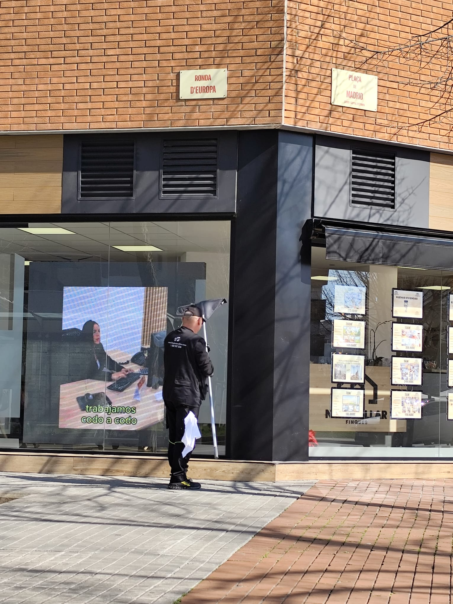

Limpieza de comunidades
Portales, escaleras, ascensores y rellanos en Terrassa con servicio semanal o quincenal.
Ver servicio
Servicio de limpieza para comunidades, parkings y oficinas en todos los barrios de Terrassa. Presupuesto en 24 horas.

Desde Sabadell damos cobertura a toda Terrassa con los mismos estándares de calidad que aplicamos en nuestra ciudad. Trabajamos en barrios como Sant Llorenç, Can Palet, Poble Nou y Ègara, atendiendo comunidades de vecinos, parkings subterráneos, oficinas y locales comerciales que necesitan un servicio de limpieza serio y constante.
En Terrassa contamos con clientes que llevan más de cinco años confiando en nosotros para el mantenimiento de sus portales y zonas comunes. Asignamos el mismo equipo a cada contrato para que los vecinos reconozcan a las personas que trabajan en su edificio. Esta continuidad genera confianza y mejora la calidad percibida.
Si buscas empresa de limpieza en Terrassa, contacta con nosotros al 680 917 536. Nos desplazamos sin coste adicional y te enviamos presupuesto detallado en menos de 24 horas.
Todos los servicios disponibles en Terrassa, con el mismo nivel de calidad que en Sabadell y el resto del Vallès Occidental.
Portales, escaleras, ascensores y rellanos en Terrassa con servicio semanal o quincenal.
Ver servicioVentanas y fachadas acristaladas en edificios y oficinas de Terrassa con medios adecuados para cada altura.
Ver servicioGarajes subterráneos y parkings al aire libre en Terrassa con maquinaria fregadora de alta eficiencia.
Ver servicioPiscinas, jardines, salones y cuartos de basura en comunidades de Terrassa con plan anual.
Ver servicioLimpieza a presión de terrazas y patios comunitarios en Terrassa. Eliminación de musgo y manchas.
Ver servicioTratamiento y abrillantado de mármol, terrazo y parquet en comunidades y locales de Terrassa.
Ver servicioCubrimos todos los barrios de Terrassa sin recargo de desplazamiento.
Comunidades y bloques residenciales en Sant Llorenç con servicio de limpieza regular y presupuesto cerrado.
Portales y parkings en el barrio de Can Palet. Servicio adaptado a la tipología de edificios de la zona.
Limpieza de comunidades de nueva construcción y edificios históricos en el Poble Nou de Terrassa.
Servicio de limpieza profesional en Ègara, cubriendo comunidades, locales y oficinas de la zona industrial.